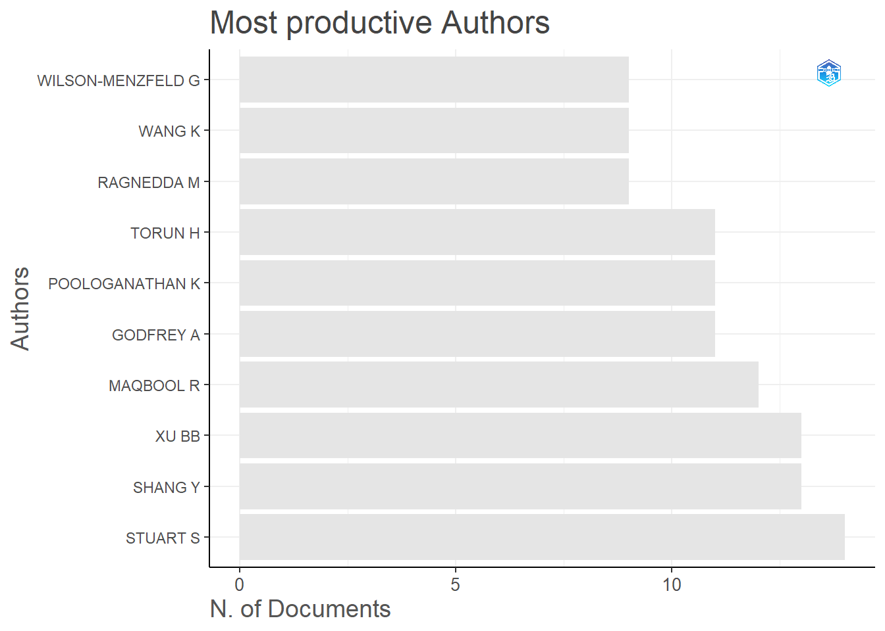
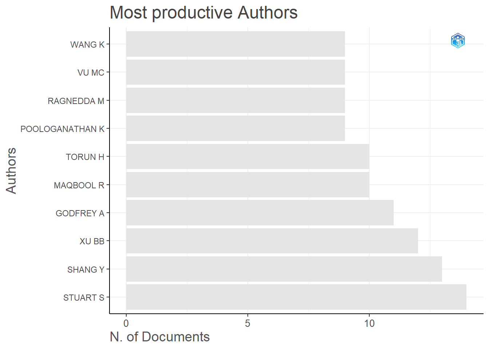
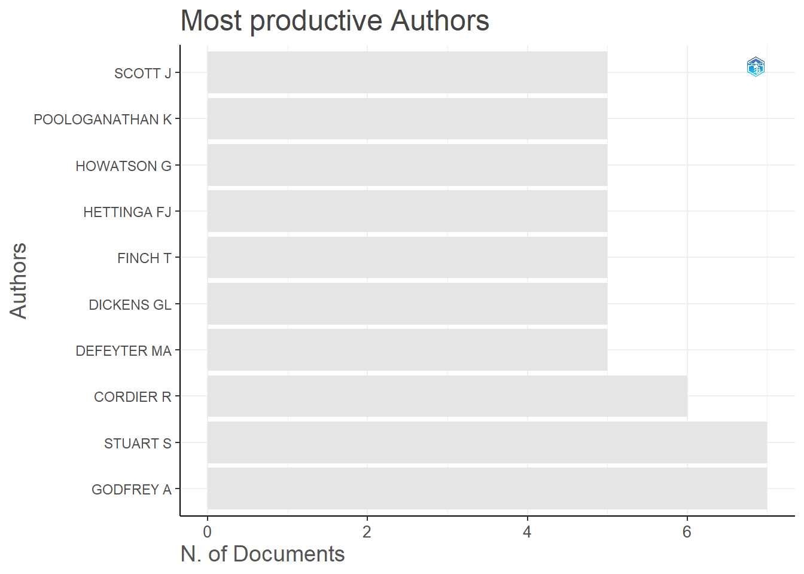
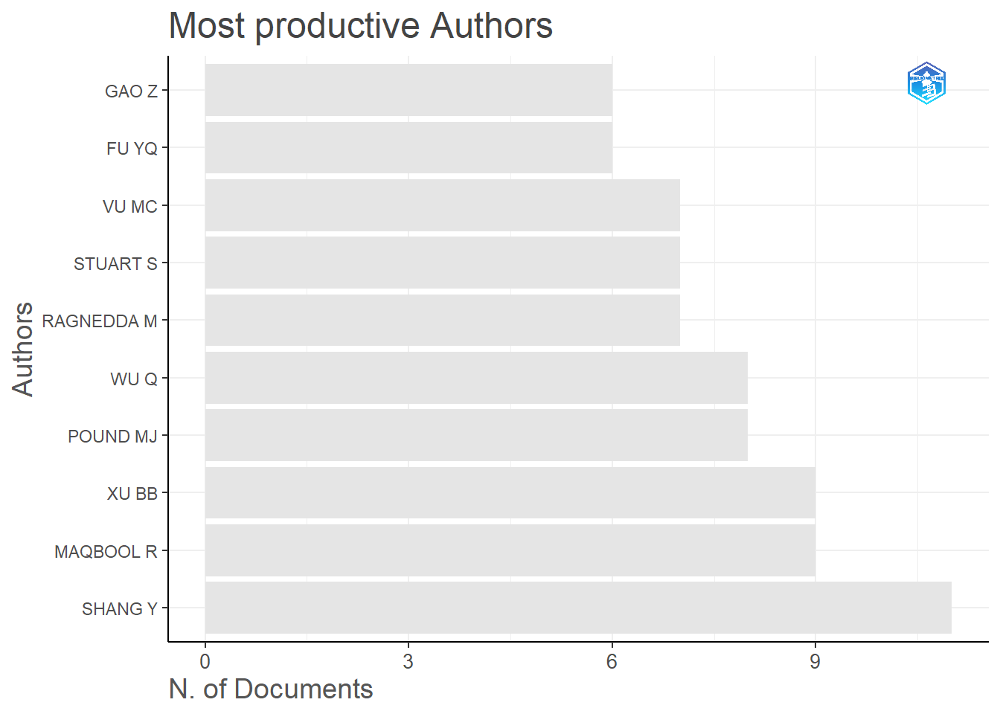

Bibliometrix
Descriptive Statistics
Tables showing most productive authors, top manuscripts per citations, corresponding authors countries, single country publications, multiple country publications, most relevant sources, most relevant keywords.
All Open Access
result_all_oa <- biblioAnalysis(all_oa_corr, sep = ";")
options(width=100)
summary_result_all_oa <- summary(object= result_all_oa, k = 25, pause = F)
MAIN INFORMATION ABOUT DATA
Timespan 2022 : 2023
Sources (Journals, Books, etc) 512
Documents 770
Annual Growth Rate % -79.12
Document Average Age 0.827
Average citations per doc 1.851
Average citations per year per doc 0.9448
References 48957
DOCUMENT TYPES
article 682
editorial 8
erratum 2
letter 2
note 4
review 69
short survey 3
DOCUMENT CONTENTS
Keywords Plus (ID) 5284
Author's Keywords (DE) 2864
AUTHORS
Authors 2432
Author Appearances 3568
Authors of single-authored docs 67
AUTHORS COLLABORATION
Single-authored docs 84
Documents per Author 0.317
Co-Authors per Doc 4.63
International co-authorships % 49.22
Annual Scientific Production
Year Articles
2022 637
2023 133
Annual Percentage Growth Rate -79.12
Most Productive Authors
Authors Articles Authors Articles Fractionalized
1 STUART S 14 SHANG Y 7.57
2 SHANG Y 13 MAQBOOL R 4.23
3 XU BB 13 PECK S 3.50
4 MAQBOOL R 12 VU MC 3.37
5 GODFREY A 11 RAGNEDDA M 3.25
6 POOLOGANATHAN K 11 STOTEN DW 3.00
7 TORUN H 11 BURTON N 2.67
8 RAGNEDDA M 9 RUIU ML 2.58
9 WANG K 9 GAO Z 2.50
10 WILSON-MENZFELD G 9 WILSON-MENZFELD G 2.40
11 WU Q 9 SEO KW 2.33
12 BARRY G 8 DICKENS GL 2.30
13 CORDIER R 8 STUART S 2.23
14 CORRADI M 8 WANG K 2.10
15 DICKENS GL 8 ARE C 2.00
16 FU Y 8 COOK P 2.00
17 GAO Z 8 KUJUNDŽIĆ J 2.00
18 PAN C 8 MURPHY N 2.00
19 POUND MJ 8 OSWALD RJ 2.00
20 VU MC 8 SHARP E 2.00
21 ELDER GJ 7 STEPHENS-GRIFFIN N 2.00
22 HOWATSON G 7 SUTHERLAND C 2.00
23 MARZBAND M 7 POLLET TV 1.93
24 MORRIS R 7 POUND MJ 1.90
25 POLLET TV 7 ELDER GJ 1.88
Top manuscripts per citations
Paper DOI TC TCperYear NTC
1 PAN D, 2022, NANO-MICRO LETT 10.1007/s40820-022-00863-z 109 54.5 49.77
2 AHMADI SE, 2022, ENERGY 10.1016/j.energy.2022.123223 42 21.0 19.18
3 GUO J, 2022, ADV COMPOS HYBRID MATER 10.1007/s42114-022-00417-2 36 18.0 16.44
4 COSTA SC, 2022, RENEWABLE SUSTAINABLE ENERGY REV 10.1016/j.rser.2021.111812 35 17.5 15.98
5 WANG L, 2022, IEEE TRANS MOB COMPUT 10.1109/TMC.2021.3059691 35 17.5 15.98
6 DENG W, 2022, ADV SCI 10.1002/advs.202102189 31 15.5 14.16
7 SZCZYGIELSKI JJ, 2022, ENERGY ECON 10.1016/j.eneco.2021.105258 31 15.5 14.16
8 SZCZYGIELSKI JJ, 2022, INT REV FINANC ANAL 10.1016/j.irfa.2021.101837 27 13.5 12.33
9 REN H, 2022, IEEE TRANS COMMUN 10.1109/TCOMM.2021.3125057 26 13.0 11.87
10 RAHIMILARKI R, 2022, RENEW ENERGY 10.1016/j.renene.2021.12.056 25 12.5 11.42
11 SUN S, 2022, APPL ENERGY 10.1016/j.apenergy.2021.117804 22 11.0 10.05
12 ALRAJA MN, 2022, INF SYST FRONT 10.1007/s10796-022-10250-z 19 9.5 8.68
13 WANG Z, 2022, ADV FUNCT MATER 10.1002/adfm.202201396 15 7.5 6.85
14 PAN Y, 2022, IEEE TRANS VEH TECHNOL 10.1109/TVT.2022.3140869 14 7.0 6.39
15 DU Y, 2022, SMALL 10.1002/smll.202104640 13 6.5 5.94
16 MANN PJ, 2022, AMBIO 10.1007/s13280-021-01666-z 13 6.5 5.94
17 OLAN F, 2022, INF SYST FRONT 10.1007/s10796-022-10242-z 13 6.5 5.94
18 JIANG F, 2022, IEEE INTERNET THINGS J 10.1109/JIOT.2021.3113872 12 6.0 5.48
19 LIU L, 2022, IEEE TRANS IND INF 10.1109/TII.2021.3080841 12 6.0 5.48
20 ALLAN J, 2022, ANTIPODE 10.1111/anti.12765 11 5.5 5.02
21 DJAFAROVA E, 2022, YOUNG CONSUM 10.1108/YC-10-2021-1405 11 5.5 5.02
22 LU S, 2022, IEEE TRANS IND INF 10.1109/TII.2022.3190034 11 5.5 5.02
23 HUSSAIN S, 2022, ENERGY 10.1016/j.energy.2021.122172 10 5.0 4.57
24 ISHFAQ K, 2022, INT J ADV MANUF TECHNOL 10.1007/s00170-022-09207-y 10 5.0 4.57
25 NAKHCHI ME, 2022, ENERGY 10.1016/j.energy.2021.122988 10 5.0 4.57
Corresponding Author's Countries
Country Articles Freq SCP MCP MCP_Ratio
1 UNITED KINGDOM 591 0.8861 320 271 0.459
2 CHINA 35 0.0525 0 35 1.000
3 AUSTRALIA 5 0.0075 0 5 1.000
4 NETHERLANDS 5 0.0075 0 5 1.000
5 GEORGIA 3 0.0045 3 0 0.000
6 KOREA 3 0.0045 0 3 1.000
7 BELGIUM 2 0.0030 0 2 1.000
8 FRANCE 2 0.0030 0 2 1.000
9 INDIA 2 0.0030 0 2 1.000
10 QATAR 2 0.0030 2 0 0.000
11 SAUDI ARABIA 2 0.0030 0 2 1.000
12 BRAZIL 1 0.0015 0 1 1.000
13 CANADA 1 0.0015 0 1 1.000
14 CHILE 1 0.0015 0 1 1.000
15 GERMANY 1 0.0015 0 1 1.000
16 GREECE 1 0.0015 0 1 1.000
17 HONG KONG 1 0.0015 0 1 1.000
18 IRELAND 1 0.0015 1 0 0.000
19 JORDAN 1 0.0015 1 0 0.000
20 KAZAKHSTAN 1 0.0015 0 1 1.000
21 MEXICO 1 0.0015 0 1 1.000
22 NORWAY 1 0.0015 0 1 1.000
23 PAKISTAN 1 0.0015 0 1 1.000
24 SWITZERLAND 1 0.0015 0 1 1.000
25 UNITED ARAB EMIRATES 1 0.0015 0 1 1.000
SCP: Single Country Publications
MCP: Multiple Country Publications
Total Citations per Country
Country Total Citations Average Article Citations
1 UNITED KINGDOM 994 1.66
2 CHINA 288 8.23
3 FRANCE 9 4.50
4 AUSTRALIA 7 1.40
5 GEORGIA 6 2.00
6 KOREA 6 2.00
7 INDIA 5 2.50
8 BELGIUM 4 2.00
9 SAUDI ARABIA 4 2.00
10 CHILE 3 3.00
11 GERMANY 3 3.00
12 NORWAY 3 3.00
13 NETHERLANDS 2 0.40
14 CANADA 1 1.00
15 MEXICO 1 1.00
16 QATAR 1 0.50
17 USA 1 1.00
18 BRAZIL 0 0.00
19 GREECE 0 0.00
20 HONG KONG 0 0.00
21 IRELAND 0 0.00
22 JORDAN 0 0.00
23 KAZAKHSTAN 0 0.00
24 PAKISTAN 0 0.00
25 SWITZERLAND 0 0.00
Most Relevant Sources
Sources Articles
1 PLOS ONE 27
2 BUILDINGS 10
3 SENSORS 9
4 JOURNAL OF CRIMINAL LAW 7
5 BMJ OPEN 6
6 BRITISH JOURNAL OF OCCUPATIONAL THERAPY 6
7 FRONTIERS IN PSYCHOLOGY 6
8 INTERNATIONAL JOURNAL OF ENVIRONMENTAL RESEARCH AND PUBLIC HEALTH 6
9 JOURNAL OF BUSINESS ETHICS 6
10 ENVIRONMENTAL SCIENCE AND POLLUTION RESEARCH 5
11 MATHEMATICS 5
12 NURSE EDUCATION TODAY 5
13 NUTRIENTS 5
14 BRITISH JOURNAL OF NUTRITION 4
15 CERAMICS INTERNATIONAL 4
16 CHRONIC RESPIRATORY DISEASE 4
17 ENERGIES 4
18 ENERGY 4
19 FRONTIERS IN PUBLIC HEALTH 4
20 GEOGRAPHICAL JOURNAL 4
21 INFORMATION SYSTEMS FRONTIERS 4
22 INTERNATIONAL JOURNAL OF ENTREPRENEURSHIP AND INNOVATION 4
23 INTERNATIONAL JOURNAL OF SOCIAL RESEARCH METHODOLOGY 4
24 JOURNAL OF MATERIALS CHEMISTRY C 4
25 LEISURE STUDIES 4
Most Relevant Keywords
Author Keywords (DE) Articles Keywords-Plus (ID) Articles
1 COVID-19 28 HUMAN 206
2 PUBLIC HEALTH 12 ARTICLE 150
3 CLIMATE CHANGE 9 HUMANS 145
4 QUALITATIVE RESEARCH 8 ADULT 115
5 DIGITAL DIVIDE 7 MALE 115
6 GENDER 7 FEMALE 113
7 IDENTITY 7 CONTROLLED STUDY 67
8 OLDER PEOPLE 7 UNITED KINGDOM 61
9 SOCIAL MEDIA 7 HUMAN EXPERIMENT 41
10 TECHNOLOGY 7 CHILD 36
11 CHILDREN 6 AGED 32
12 GAIT 6 COVID-19 30
13 MENTAL HEALTH 6 CLINICAL ARTICLE 29
14 PERFORMANCE 6 MENTAL HEALTH 29
15 SUSTAINABILITY 6 ENGLAND 28
16 SYSTEMATIC REVIEW 6 MAJOR CLINICAL STUDY 28
17 UK 6 ADOLESCENT 26
18 ANXIETY 5 QUALITATIVE RESEARCH 26
19 CARE HOMES 5 QUALITY OF LIFE 26
20 DEEP LEARNING 5 EXERCISE 23
21 DISABILITY 5 REVIEW 21
22 EXERCISE 5 ANXIETY 20
23 FOOD INSECURITY 5 COGNITION 20
24 HIGHER EDUCATION 5 NONHUMAN 20
25 IMPLEMENTATION 5 SYSTEMATIC REVIEW 20Green
result_green <- biblioAnalysis(green_corr, sep = ";")
options(width=100)
summary_result_green <- summary(object= result_green, k = 25, pause = F)
MAIN INFORMATION ABOUT DATA
Timespan 2022 : 2023
Sources (Journals, Books, etc) 500
Documents 738
Annual Growth Rate % -80.97
Document Average Age 0.84
Average citations per doc 1.925
Average citations per year per doc 0.9804
References 47429
DOCUMENT TYPES
article 656
editorial 7
erratum 1
letter 2
note 4
review 65
short survey 3
DOCUMENT CONTENTS
Keywords Plus (ID) 5200
Author's Keywords (DE) 2813
AUTHORS
Authors 2398
Author Appearances 3432
Authors of single-authored docs 66
AUTHORS COLLABORATION
Single-authored docs 81
Documents per Author 0.308
Co-Authors per Doc 4.65
International co-authorships % 49.73
Annual Scientific Production
Year Articles
2022 620
2023 118
Annual Percentage Growth Rate -80.97
Most Productive Authors
Authors Articles Authors Articles Fractionalized
1 STUART S 14 SHANG Y 7.57
2 SHANG Y 13 VU MC 4.37
3 XU BB 12 MAQBOOL R 3.57
4 GODFREY A 11 PECK S 3.50
5 MAQBOOL R 10 RAGNEDDA M 3.25
6 TORUN H 10 STOTEN DW 3.00
7 POOLOGANATHAN K 9 SUTHERLAND C 3.00
8 RAGNEDDA M 9 BURTON N 2.67
9 VU MC 9 RUIU ML 2.58
10 WANG K 9 GAO Z 2.50
11 WU Q 9 SEO KW 2.33
12 BARRY G 8 DICKENS GL 2.30
13 DICKENS GL 8 WILSON-MENZFELD G 2.24
14 FU Y 8 STUART S 2.23
15 GAO Z 8 WANG K 2.10
16 PAN C 8 COOK P 2.00
17 POUND MJ 8 MURPHY N 2.00
18 WILSON-MENZFELD G 8 OSWALD RJ 2.00
19 CORDIER R 7 STEPHENS-GRIFFIN N 2.00
20 HOWATSON G 7 POLLET TV 1.93
21 MORRIS R 7 POUND MJ 1.90
22 POLLET TV 7 GODFREY A 1.87
23 RUIU ML 7 PAN C 1.85
24 SCOTT J 7 BROWN G 1.83
25 BURTON N 6 GUERRERO M 1.83
Top manuscripts per citations
Paper DOI TC TCperYear NTC
1 PAN D, 2022, NANO-MICRO LETT 10.1007/s40820-022-00863-z 109 54.5 48.44
2 AHMADI SE, 2022, ENERGY 10.1016/j.energy.2022.123223 42 21.0 18.67
3 GUO J, 2022, ADV COMPOS HYBRID MATER 10.1007/s42114-022-00417-2 36 18.0 16.00
4 COSTA SC, 2022, RENEWABLE SUSTAINABLE ENERGY REV 10.1016/j.rser.2021.111812 35 17.5 15.56
5 WANG L, 2022, IEEE TRANS MOB COMPUT-a 10.1109/TMC.2021.3059691 35 17.5 15.56
6 DENG W, 2022, ADV SCI 10.1002/advs.202102189 31 15.5 13.78
7 SZCZYGIELSKI JJ, 2022, ENERGY ECON 10.1016/j.eneco.2021.105258 31 15.5 13.78
8 SZCZYGIELSKI JJ, 2022, INT REV FINANC ANAL 10.1016/j.irfa.2021.101837 27 13.5 12.00
9 REN H, 2022, IEEE TRANS COMMUN 10.1109/TCOMM.2021.3125057 26 13.0 11.56
10 RAHIMILARKI R, 2022, RENEW ENERGY 10.1016/j.renene.2021.12.056 25 12.5 11.11
11 SUN S, 2022, APPL ENERGY 10.1016/j.apenergy.2021.117804 22 11.0 9.78
12 ALRAJA MN, 2022, INF SYST FRONT 10.1007/s10796-022-10250-z 19 9.5 8.44
13 WANG Z, 2022, ADV FUNCT MATER 10.1002/adfm.202201396 15 7.5 6.67
14 PAN Y, 2022, IEEE TRANS VEH TECHNOL 10.1109/TVT.2022.3140869 14 7.0 6.22
15 DU Y, 2022, SMALL 10.1002/smll.202104640 13 6.5 5.78
16 MANN PJ, 2022, AMBIO 10.1007/s13280-021-01666-z 13 6.5 5.78
17 OLAN F, 2022, INF SYST FRONT 10.1007/s10796-022-10242-z 13 6.5 5.78
18 JIANG F, 2022, IEEE INTERNET THINGS J 10.1109/JIOT.2021.3113872 12 6.0 5.33
19 LIU L, 2022, IEEE TRANS IND INF 10.1109/TII.2021.3080841 12 6.0 5.33
20 ALLAN J, 2022, ANTIPODE 10.1111/anti.12765 11 5.5 4.89
21 DJAFAROVA E, 2022, YOUNG CONSUM 10.1108/YC-10-2021-1405 11 5.5 4.89
22 LU S, 2022, IEEE TRANS IND INF 10.1109/TII.2022.3190034 11 5.5 4.89
23 HUSSAIN S, 2022, ENERGY 10.1016/j.energy.2021.122172 10 5.0 4.44
24 ISHFAQ K, 2022, INT J ADV MANUF TECHNOL 10.1007/s00170-022-09207-y 10 5.0 4.44
25 NAKHCHI ME, 2022, ENERGY 10.1016/j.energy.2021.122988 10 5.0 4.44
Corresponding Author's Countries
Country Articles Freq SCP MCP MCP_Ratio
1 UNITED KINGDOM 573 0.88426 304 269 0.469
2 CHINA 34 0.05247 0 34 1.000
3 AUSTRALIA 5 0.00772 0 5 1.000
4 NETHERLANDS 5 0.00772 0 5 1.000
5 GEORGIA 3 0.00463 3 0 0.000
6 KOREA 3 0.00463 0 3 1.000
7 BELGIUM 2 0.00309 0 2 1.000
8 CHILE 2 0.00309 0 2 1.000
9 FRANCE 2 0.00309 0 2 1.000
10 INDIA 2 0.00309 0 2 1.000
11 QATAR 2 0.00309 2 0 0.000
12 BRAZIL 1 0.00154 0 1 1.000
13 CANADA 1 0.00154 0 1 1.000
14 GERMANY 1 0.00154 0 1 1.000
15 GREECE 1 0.00154 0 1 1.000
16 HONG KONG 1 0.00154 0 1 1.000
17 IRELAND 1 0.00154 1 0 0.000
18 JORDAN 1 0.00154 1 0 0.000
19 KAZAKHSTAN 1 0.00154 0 1 1.000
20 MEXICO 1 0.00154 0 1 1.000
21 NORWAY 1 0.00154 0 1 1.000
22 PAKISTAN 1 0.00154 0 1 1.000
23 SAUDI ARABIA 1 0.00154 0 1 1.000
24 SWITZERLAND 1 0.00154 0 1 1.000
25 UNITED ARAB EMIRATES 1 0.00154 0 1 1.000
SCP: Single Country Publications
MCP: Multiple Country Publications
Total Citations per Country
Country Total Citations Average Article Citations
1 UNITED KINGDOM 988 1.72
2 CHINA 288 8.47
3 FRANCE 9 4.50
4 AUSTRALIA 7 1.40
5 CHILE 7 3.50
6 GEORGIA 6 2.00
7 KOREA 6 2.00
8 INDIA 5 2.50
9 BELGIUM 4 2.00
10 SAUDI ARABIA 4 4.00
11 GERMANY 3 3.00
12 NORWAY 3 3.00
13 NETHERLANDS 2 0.40
14 CANADA 1 1.00
15 MEXICO 1 1.00
16 QATAR 1 0.50
17 USA 1 1.00
18 BRAZIL 0 0.00
19 GREECE 0 0.00
20 HONG KONG 0 0.00
21 IRELAND 0 0.00
22 JORDAN 0 0.00
23 KAZAKHSTAN 0 0.00
24 PAKISTAN 0 0.00
25 SWITZERLAND 0 0.00
Most Relevant Sources
Sources Articles
1 PLOS ONE 25
2 BUILDINGS 9
3 SENSORS 9
4 JOURNAL OF CRIMINAL LAW 7
5 BMJ OPEN 6
6 FRONTIERS IN PSYCHOLOGY 6
7 INTERNATIONAL JOURNAL OF ENVIRONMENTAL RESEARCH AND PUBLIC HEALTH 6
8 JOURNAL OF BUSINESS ETHICS 6
9 BRITISH JOURNAL OF OCCUPATIONAL THERAPY 5
10 NURSE EDUCATION TODAY 5
11 NUTRIENTS 5
12 BRITISH JOURNAL OF NUTRITION 4
13 CERAMICS INTERNATIONAL 4
14 ENERGIES 4
15 ENERGY 4
16 FRONTIERS IN PUBLIC HEALTH 4
17 INFORMATION SYSTEMS FRONTIERS 4
18 JOURNAL OF MATERIALS CHEMISTRY C 4
19 LEISURE STUDIES 4
20 MATHEMATICS 4
21 SUSTAINABILITY (SWITZERLAND) 4
22 APPLIED SCIENCES (SWITZERLAND) 3
23 BMC SPORTS SCIENCE MEDICINE AND REHABILITATION 3
24 CASE STUDIES IN CONSTRUCTION MATERIALS 3
25 CHRONIC RESPIRATORY DISEASE 3
Most Relevant Keywords
Author Keywords (DE) Articles Keywords-Plus (ID) Articles
1 COVID-19 28 HUMAN 202
2 PUBLIC HEALTH 12 ARTICLE 148
3 CLIMATE CHANGE 9 HUMANS 142
4 GENDER 8 ADULT 114
5 IDENTITY 8 MALE 114
6 QUALITATIVE RESEARCH 8 FEMALE 112
7 DIGITAL DIVIDE 7 CONTROLLED STUDY 66
8 OLDER PEOPLE 7 UNITED KINGDOM 61
9 SOCIAL MEDIA 7 HUMAN EXPERIMENT 40
10 TECHNOLOGY 7 CHILD 36
11 CHILDREN 6 AGED 31
12 GAIT 6 COVID-19 30
13 MENTAL HEALTH 6 CLINICAL ARTICLE 29
14 PERFORMANCE 6 ENGLAND 28
15 SYSTEMATIC REVIEW 6 MAJOR CLINICAL STUDY 27
16 UK 6 MENTAL HEALTH 27
17 ANXIETY 5 QUALITATIVE RESEARCH 26
18 CARE HOMES 5 QUALITY OF LIFE 26
19 DEEP LEARNING 5 ADOLESCENT 24
20 DISABILITY 5 EXERCISE 23
21 EXERCISE 5 COGNITION 20
22 FOOD INSECURITY 5 REVIEW 20
23 HIGHER EDUCATION 5 EDUCATION 19
24 IMPLEMENTATION 5 MIDDLE AGED 19
25 LITERATURE REVIEW 5 NONHUMAN 19Green Final
result_green_final <- biblioAnalysis(green_final_corr, sep = ";")
options(width=100)
summary_result_green_final <- summary(object= result_green_final, k = 25, pause = F)
MAIN INFORMATION ABOUT DATA
Timespan 2022 : 2023
Sources (Journals, Books, etc) 176
Documents 238
Annual Growth Rate % -88.79
Document Average Age 0.899
Average citations per doc 1.878
Average citations per year per doc 0.9538
References 15744
DOCUMENT TYPES
article 206
editorial 3
note 1
review 27
short survey 1
DOCUMENT CONTENTS
Keywords Plus (ID) 2272
Author's Keywords (DE) 935
AUTHORS
Authors 1207
Author Appearances 1454
Authors of single-authored docs 6
AUTHORS COLLABORATION
Single-authored docs 6
Documents per Author 0.197
Co-Authors per Doc 6.11
International co-authorships % 53.78
Annual Scientific Production
Year Articles
2022 214
2023 24
Annual Percentage Growth Rate -88.79
Most Productive Authors
Authors Articles Authors Articles Fractionalized
1 GODFREY A 7 BURTON N 1.833
2 STUART S 7 DICKENS GL 1.510
3 CORDIER R 6 GODFREY A 1.344
4 DEFEYTER MA 5 HETTINGA FJ 1.333
5 DICKENS GL 5 DEFEYTER MA 1.317
6 FINCH T 5 STUART S 1.244
7 HETTINGA FJ 5 GAO Z 1.167
8 HOWATSON G 5 MENTING SGP 1.083
9 POOLOGANATHAN K 5 CORDIER R 1.071
10 SCOTT J 5 WILSON-MENZFELD G 1.033
11 AVERY L 4 DAVENPORT C 1.000
12 BARRY G 4 GALVIN P 1.000
13 BURTON N 4 GANIE HA 1.000
14 CORRADI M 4 HILGEN G 1.000
15 COVENTRY L 4 MIRANDA D 1.000
16 FU Y 4 MONTGOMERY A 1.000
17 GATHEESHGAR P 4 PAN C 1.000
18 MENTING SGP 4 SHANG Y 1.000
19 MORRIS R 4 SROKA R 1.000
20 PAN C 4 WANG K 1.000
21 TORUN H 4 ANTOLIN P 0.833
22 WANG K 4 RAGNEDDA M 0.833
23 WILSON-MENZFELD G 4 RUIU ML 0.833
24 BROWN R 3 VU MC 0.833
25 ELDER GJ 3 FINCH T 0.819
Top manuscripts per citations
Paper DOI TC TCperYear NTC
1 WANG L, 2022, IEEE TRANS MOB COMPUT 10.1109/TMC.2021.3059691 35 17.5 17.02
2 DENG W, 2022, ADV SCI 10.1002/advs.202102189 31 15.5 15.08
3 REN H, 2022, IEEE TRANS COMMUN 10.1109/TCOMM.2021.3125057 26 13.0 12.65
4 SUN S, 2022, APPL ENERGY 10.1016/j.apenergy.2021.117804 22 11.0 10.70
5 MANN PJ, 2022, AMBIO 10.1007/s13280-021-01666-z 13 6.5 6.32
6 OLAN F, 2022, INF SYST FRONT 10.1007/s10796-022-10242-z 13 6.5 6.32
7 CUNNINGHAM JA, 2022, SMALL BUS ECON 10.1007/s11187-021-00513-5 9 4.5 4.38
8 DEVER A, 2022, SENSORS 10.3390/s22041480 8 4.0 3.89
9 FARSI DN, 2022, BR J NUTR 10.1017/S0007114521002750 8 4.0 3.89
10 MIRANDA D, 2022, POLICING SOC 10.1080/10439463.2021.1879074 8 4.0 3.89
11 TAMAYO‐VEGAS S, 2022, POLYM 10.3390/polym14091842 8 4.0 3.89
12 ALKHALIFAH MA, 2022, J AM CHEM SOC 10.1021/jacs.1c11757 7 3.5 3.40
13 ANTOLIN P, 2022, FRONT ASTRON SPACE SCI 10.3389/fspas.2022.820116 7 3.5 3.40
14 FARRAND B, 2022, EUR SECUR 10.1080/09662839.2022.2102896 7 3.5 3.40
15 NEWBOLD JW, 2022, HUM COMPUT INTERACT 10.1080/07370024.2021.1982391 7 3.5 3.40
16 MAHONEY J, 2022, RES ETHICS 10.1177/17470161221087542 6 3.0 2.92
17 PUNTON G, 2022, PLOS ONE 10.1371/journal.pone.0265542 6 3.0 2.92
18 AL MAQBALI M, 2022, BIOL RES NURS 10.1177/10998004211055866 5 2.5 2.43
19 BROWN R, 2022, DIGIT HEALTH 10.1177/20552076221084458 5 2.5 2.43
20 FIELD RW, 2022, MEMBR 10.3390/membranes12020187 5 2.5 2.43
21 KARAMPELAS K, 2022, ASTROPHYS J 10.3847/1538-4357/ac3b53 5 2.5 2.43
22 THOMPSON N, 2022, CLIM PAST 10.5194/cp-18-209-2022 5 2.5 2.43
23 ALROWAIS R, 2022, CASE STUD THERM ENG 10.1016/j.csite.2022.102084 4 2.0 1.95
24 ANGIUS L, 2022, EUR J APPL PHYSIOL 10.1007/s00421-021-04815-0 4 2.0 1.95
25 ANTOLIN P, 2022, ASTROPHYS J LETT 10.3847/2041-8213/ac51dd 4 2.0 1.95
Corresponding Author's Countries
Country Articles Freq SCP MCP MCP_Ratio
1 UNITED KINGDOM 193 0.88940 93 100 0.518
2 AUSTRALIA 5 0.02304 0 5 1.000
3 CHINA 4 0.01843 0 4 1.000
4 BELGIUM 2 0.00922 0 2 1.000
5 GEORGIA 2 0.00922 2 0 0.000
6 NETHERLANDS 2 0.00922 0 2 1.000
7 CANADA 1 0.00461 0 1 1.000
8 FRANCE 1 0.00461 0 1 1.000
9 GERMANY 1 0.00461 0 1 1.000
10 INDIA 1 0.00461 0 1 1.000
11 JORDAN 1 0.00461 1 0 0.000
12 QATAR 1 0.00461 1 0 0.000
13 SAUDI ARABIA 1 0.00461 0 1 1.000
14 SWITZERLAND 1 0.00461 0 1 1.000
15 USA 1 0.00461 0 1 1.000
SCP: Single Country Publications
MCP: Multiple Country Publications
Total Citations per Country
Country Total Citations Average Article Citations
1 UNITED KINGDOM 355 1.84
2 CHINA 32 8.00
3 AUSTRALIA 7 1.40
4 FRANCE 7 7.00
5 GEORGIA 6 3.00
6 BELGIUM 4 2.00
7 SAUDI ARABIA 4 4.00
8 GERMANY 3 3.00
9 CANADA 1 1.00
10 INDIA 1 1.00
11 NETHERLANDS 1 0.50
12 QATAR 1 1.00
13 USA 1 1.00
14 JORDAN 0 0.00
15 SWITZERLAND 0 0.00
Most Relevant Sources
Sources Articles
1 PLOS ONE 13
2 SENSORS 7
3 INTERNATIONAL JOURNAL OF ENVIRONMENTAL RESEARCH AND PUBLIC HEALTH 6
4 BMJ OPEN 5
5 NUTRIENTS 5
6 FRONTIERS IN PSYCHOLOGY 4
7 BRITISH JOURNAL OF NUTRITION 3
8 BUILDINGS 3
9 CASE STUDIES IN CONSTRUCTION MATERIALS 3
10 DIGITAL HEALTH 3
11 FRONTIERS IN PUBLIC HEALTH 3
12 PILOT AND FEASIBILITY STUDIES 3
13 POLICING AND SOCIETY 3
14 AMERICAN BEHAVIORAL SCIENTIST 2
15 ASTROPHYSICAL JOURNAL 2
16 BRITISH JOURNAL OF OCCUPATIONAL THERAPY 2
17 CASE STUDIES IN THERMAL ENGINEERING 2
18 FRONTIERS IN ASTRONOMY AND SPACE SCIENCES 2
19 FRONTIERS IN MOLECULAR BIOSCIENCES 2
20 FRONTIERS IN PHYSIOLOGY 2
21 JOURNAL OF BUSINESS ETHICS 2
22 JOURNAL OF CRIMINAL LAW 2
23 JOURNAL OF MATERIALS CHEMISTRY C 2
24 MSYSTEMS 2
25 POLYMERS 2
Most Relevant Keywords
Author Keywords (DE) Articles Keywords-Plus (ID) Articles
1 COVID-19 10 HUMAN 97
2 PUBLIC HEALTH 8 HUMANS 77
3 EXERCISE 5 ARTICLE 70
4 FOOD INSECURITY 5 ADULT 58
5 GAIT 5 MALE 58
6 PHYSICAL ACTIVITY 4 FEMALE 51
7 RECOVERY 4 CONTROLLED STUDY 35
8 STROKE 4 UNITED KINGDOM 22
9 SYSTEMATIC REVIEW 4 CHILD 21
10 TECHNOLOGY 4 ADOLESCENT 18
11 AUTISM SPECTRUM DISORDER 3 CLINICAL ARTICLE 16
12 CARE HOMES 3 HUMAN EXPERIMENT 16
13 CLIMATE CHANGE 3 COVID-19 14
14 COVID-19 PANDEMIC 3 EXERCISE 14
15 NUTRITION 3 QUALITY OF LIFE 13
16 PACING 3 COHORT ANALYSIS 12
17 PERFORMANCE 3 ENGLAND 12
18 REHABILITATION 3 MENTAL HEALTH 12
19 SLEEP 3 AGED 11
20 SOCIAL MEDIA 3 GAIT 11
21 ACCEPTABILITY 2 QUALITATIVE RESEARCH 11
22 ACOUSTOFLUIDICS 2 DIET 10
23 AGBRESA STUDY 2 RANDOMIZED CONTROLLED TRIAL 10
24 ANTHOCYANINS 2 REVIEW 10
25 ANXIETY 2 YOUNG ADULT 10Green Accepted
result_green_accepted <- biblioAnalysis(green_accepted_corr, sep = ";")
options(width=100)
summary_result_green_accepted <- summary(object= result_green, k = 25, pause = F)
MAIN INFORMATION ABOUT DATA
Timespan 2022 : 2023
Sources (Journals, Books, etc) 500
Documents 738
Annual Growth Rate % -80.97
Document Average Age 0.84
Average citations per doc 1.925
Average citations per year per doc 0.9804
References 47429
DOCUMENT TYPES
article 656
editorial 7
erratum 1
letter 2
note 4
review 65
short survey 3
DOCUMENT CONTENTS
Keywords Plus (ID) 5200
Author's Keywords (DE) 2813
AUTHORS
Authors 2398
Author Appearances 3432
Authors of single-authored docs 66
AUTHORS COLLABORATION
Single-authored docs 81
Documents per Author 0.308
Co-Authors per Doc 4.65
International co-authorships % 49.73
Annual Scientific Production
Year Articles
2022 620
2023 118
Annual Percentage Growth Rate -80.97
Most Productive Authors
Authors Articles Authors Articles Fractionalized
1 STUART S 14 SHANG Y 7.57
2 SHANG Y 13 VU MC 4.37
3 XU BB 12 MAQBOOL R 3.57
4 GODFREY A 11 PECK S 3.50
5 MAQBOOL R 10 RAGNEDDA M 3.25
6 TORUN H 10 STOTEN DW 3.00
7 POOLOGANATHAN K 9 SUTHERLAND C 3.00
8 RAGNEDDA M 9 BURTON N 2.67
9 VU MC 9 RUIU ML 2.58
10 WANG K 9 GAO Z 2.50
11 WU Q 9 SEO KW 2.33
12 BARRY G 8 DICKENS GL 2.30
13 DICKENS GL 8 WILSON-MENZFELD G 2.24
14 FU Y 8 STUART S 2.23
15 GAO Z 8 WANG K 2.10
16 PAN C 8 COOK P 2.00
17 POUND MJ 8 MURPHY N 2.00
18 WILSON-MENZFELD G 8 OSWALD RJ 2.00
19 CORDIER R 7 STEPHENS-GRIFFIN N 2.00
20 HOWATSON G 7 POLLET TV 1.93
21 MORRIS R 7 POUND MJ 1.90
22 POLLET TV 7 GODFREY A 1.87
23 RUIU ML 7 PAN C 1.85
24 SCOTT J 7 BROWN G 1.83
25 BURTON N 6 GUERRERO M 1.83
Top manuscripts per citations
Paper DOI TC TCperYear NTC
1 PAN D, 2022, NANO-MICRO LETT 10.1007/s40820-022-00863-z 109 54.5 48.44
2 AHMADI SE, 2022, ENERGY 10.1016/j.energy.2022.123223 42 21.0 18.67
3 GUO J, 2022, ADV COMPOS HYBRID MATER 10.1007/s42114-022-00417-2 36 18.0 16.00
4 COSTA SC, 2022, RENEWABLE SUSTAINABLE ENERGY REV 10.1016/j.rser.2021.111812 35 17.5 15.56
5 WANG L, 2022, IEEE TRANS MOB COMPUT-a 10.1109/TMC.2021.3059691 35 17.5 15.56
6 DENG W, 2022, ADV SCI 10.1002/advs.202102189 31 15.5 13.78
7 SZCZYGIELSKI JJ, 2022, ENERGY ECON 10.1016/j.eneco.2021.105258 31 15.5 13.78
8 SZCZYGIELSKI JJ, 2022, INT REV FINANC ANAL 10.1016/j.irfa.2021.101837 27 13.5 12.00
9 REN H, 2022, IEEE TRANS COMMUN 10.1109/TCOMM.2021.3125057 26 13.0 11.56
10 RAHIMILARKI R, 2022, RENEW ENERGY 10.1016/j.renene.2021.12.056 25 12.5 11.11
11 SUN S, 2022, APPL ENERGY 10.1016/j.apenergy.2021.117804 22 11.0 9.78
12 ALRAJA MN, 2022, INF SYST FRONT 10.1007/s10796-022-10250-z 19 9.5 8.44
13 WANG Z, 2022, ADV FUNCT MATER 10.1002/adfm.202201396 15 7.5 6.67
14 PAN Y, 2022, IEEE TRANS VEH TECHNOL 10.1109/TVT.2022.3140869 14 7.0 6.22
15 DU Y, 2022, SMALL 10.1002/smll.202104640 13 6.5 5.78
16 MANN PJ, 2022, AMBIO 10.1007/s13280-021-01666-z 13 6.5 5.78
17 OLAN F, 2022, INF SYST FRONT 10.1007/s10796-022-10242-z 13 6.5 5.78
18 JIANG F, 2022, IEEE INTERNET THINGS J 10.1109/JIOT.2021.3113872 12 6.0 5.33
19 LIU L, 2022, IEEE TRANS IND INF 10.1109/TII.2021.3080841 12 6.0 5.33
20 ALLAN J, 2022, ANTIPODE 10.1111/anti.12765 11 5.5 4.89
21 DJAFAROVA E, 2022, YOUNG CONSUM 10.1108/YC-10-2021-1405 11 5.5 4.89
22 LU S, 2022, IEEE TRANS IND INF 10.1109/TII.2022.3190034 11 5.5 4.89
23 HUSSAIN S, 2022, ENERGY 10.1016/j.energy.2021.122172 10 5.0 4.44
24 ISHFAQ K, 2022, INT J ADV MANUF TECHNOL 10.1007/s00170-022-09207-y 10 5.0 4.44
25 NAKHCHI ME, 2022, ENERGY 10.1016/j.energy.2021.122988 10 5.0 4.44
Corresponding Author's Countries
Country Articles Freq SCP MCP MCP_Ratio
1 UNITED KINGDOM 573 0.88426 304 269 0.469
2 CHINA 34 0.05247 0 34 1.000
3 AUSTRALIA 5 0.00772 0 5 1.000
4 NETHERLANDS 5 0.00772 0 5 1.000
5 GEORGIA 3 0.00463 3 0 0.000
6 KOREA 3 0.00463 0 3 1.000
7 BELGIUM 2 0.00309 0 2 1.000
8 CHILE 2 0.00309 0 2 1.000
9 FRANCE 2 0.00309 0 2 1.000
10 INDIA 2 0.00309 0 2 1.000
11 QATAR 2 0.00309 2 0 0.000
12 BRAZIL 1 0.00154 0 1 1.000
13 CANADA 1 0.00154 0 1 1.000
14 GERMANY 1 0.00154 0 1 1.000
15 GREECE 1 0.00154 0 1 1.000
16 HONG KONG 1 0.00154 0 1 1.000
17 IRELAND 1 0.00154 1 0 0.000
18 JORDAN 1 0.00154 1 0 0.000
19 KAZAKHSTAN 1 0.00154 0 1 1.000
20 MEXICO 1 0.00154 0 1 1.000
21 NORWAY 1 0.00154 0 1 1.000
22 PAKISTAN 1 0.00154 0 1 1.000
23 SAUDI ARABIA 1 0.00154 0 1 1.000
24 SWITZERLAND 1 0.00154 0 1 1.000
25 UNITED ARAB EMIRATES 1 0.00154 0 1 1.000
SCP: Single Country Publications
MCP: Multiple Country Publications
Total Citations per Country
Country Total Citations Average Article Citations
1 UNITED KINGDOM 988 1.72
2 CHINA 288 8.47
3 FRANCE 9 4.50
4 AUSTRALIA 7 1.40
5 CHILE 7 3.50
6 GEORGIA 6 2.00
7 KOREA 6 2.00
8 INDIA 5 2.50
9 BELGIUM 4 2.00
10 SAUDI ARABIA 4 4.00
11 GERMANY 3 3.00
12 NORWAY 3 3.00
13 NETHERLANDS 2 0.40
14 CANADA 1 1.00
15 MEXICO 1 1.00
16 QATAR 1 0.50
17 USA 1 1.00
18 BRAZIL 0 0.00
19 GREECE 0 0.00
20 HONG KONG 0 0.00
21 IRELAND 0 0.00
22 JORDAN 0 0.00
23 KAZAKHSTAN 0 0.00
24 PAKISTAN 0 0.00
25 SWITZERLAND 0 0.00
Most Relevant Sources
Sources Articles
1 PLOS ONE 25
2 BUILDINGS 9
3 SENSORS 9
4 JOURNAL OF CRIMINAL LAW 7
5 BMJ OPEN 6
6 FRONTIERS IN PSYCHOLOGY 6
7 INTERNATIONAL JOURNAL OF ENVIRONMENTAL RESEARCH AND PUBLIC HEALTH 6
8 JOURNAL OF BUSINESS ETHICS 6
9 BRITISH JOURNAL OF OCCUPATIONAL THERAPY 5
10 NURSE EDUCATION TODAY 5
11 NUTRIENTS 5
12 BRITISH JOURNAL OF NUTRITION 4
13 CERAMICS INTERNATIONAL 4
14 ENERGIES 4
15 ENERGY 4
16 FRONTIERS IN PUBLIC HEALTH 4
17 INFORMATION SYSTEMS FRONTIERS 4
18 JOURNAL OF MATERIALS CHEMISTRY C 4
19 LEISURE STUDIES 4
20 MATHEMATICS 4
21 SUSTAINABILITY (SWITZERLAND) 4
22 APPLIED SCIENCES (SWITZERLAND) 3
23 BMC SPORTS SCIENCE MEDICINE AND REHABILITATION 3
24 CASE STUDIES IN CONSTRUCTION MATERIALS 3
25 CHRONIC RESPIRATORY DISEASE 3
Most Relevant Keywords
Author Keywords (DE) Articles Keywords-Plus (ID) Articles
1 COVID-19 28 HUMAN 202
2 PUBLIC HEALTH 12 ARTICLE 148
3 CLIMATE CHANGE 9 HUMANS 142
4 GENDER 8 ADULT 114
5 IDENTITY 8 MALE 114
6 QUALITATIVE RESEARCH 8 FEMALE 112
7 DIGITAL DIVIDE 7 CONTROLLED STUDY 66
8 OLDER PEOPLE 7 UNITED KINGDOM 61
9 SOCIAL MEDIA 7 HUMAN EXPERIMENT 40
10 TECHNOLOGY 7 CHILD 36
11 CHILDREN 6 AGED 31
12 GAIT 6 COVID-19 30
13 MENTAL HEALTH 6 CLINICAL ARTICLE 29
14 PERFORMANCE 6 ENGLAND 28
15 SYSTEMATIC REVIEW 6 MAJOR CLINICAL STUDY 27
16 UK 6 MENTAL HEALTH 27
17 ANXIETY 5 QUALITATIVE RESEARCH 26
18 CARE HOMES 5 QUALITY OF LIFE 26
19 DEEP LEARNING 5 ADOLESCENT 24
20 DISABILITY 5 EXERCISE 23
21 EXERCISE 5 COGNITION 20
22 FOOD INSECURITY 5 REVIEW 20
23 HIGHER EDUCATION 5 EDUCATION 19
24 IMPLEMENTATION 5 MIDDLE AGED 19
25 LITERATURE REVIEW 5 NONHUMAN 19Not Green
result_not_green <- biblioAnalysis(not_green_corr, sep = ";")
options(width=100)
summary_result_not_green <- summary(object= result_not_green, k = 25, pause = F)
MAIN INFORMATION ABOUT DATA
Timespan 2022 : 2023
Sources (Journals, Books, etc) 172
Documents 218
Annual Growth Rate % -66.26
Document Average Age 0.748
Average citations per doc 1.477
Average citations per year per doc 0.8165
References 12546
DOCUMENT TYPES
article 148
book chapter 32
conference paper 9
editorial 8
erratum 1
letter 2
note 7
review 11
DOCUMENT CONTENTS
Keywords Plus (ID) 1514
Author's Keywords (DE) 874
AUTHORS
Authors 649
Author Appearances 856
Authors of single-authored docs 33
AUTHORS COLLABORATION
Single-authored docs 42
Documents per Author 0.336
Co-Authors per Doc 3.93
International co-authorships % 48.62
Annual Scientific Production
Year Articles
2022 163
2023 55
Annual Percentage Growth Rate -66.26
Most Productive Authors
Authors Articles Authors Articles Fractionalized
1 FU YQ 10 WYATT T 8.00
2 POOLOGANATHAN K 10 JAHANKHANI H 3.25
3 WU Q 9 WILLIAMS H 2.50
4 GATHEESHGAR P 8 KOPNINA H 2.00
5 JAHANKHANI H 8 SINGH N 2.00
6 LIU J 8 WALKER J 2.00
7 WYATT T 8 FU YQ 1.93
8 CORRADI M 6 POOLOGANATHAN K 1.70
9 LU H 6 BLACKWOOD A 1.50
10 MARZBAND M 6 HILL B 1.50
11 XU BB 6 LU H 1.43
12 YUAN J 6 SCHAARSCHMIDT M 1.25
13 GODFREY A 5 PECK S 1.20
14 GUO Z 5 GATHEESHGAR P 1.17
15 LIU B 5 MARZBAND M 1.16
16 STUART S 5 LIU J 1.15
17 ABUSORRAH A 4 LEI H 1.12
18 GUNALAN S 4 CORRADI M 1.10
19 HE XD 4 GODFREY A 1.08
20 KANTHASAMY E 4 STUART S 1.08
21 LI H 4 WU Q 1.06
22 TORUN H 4 ANGIUS L 1.00
23 XING L 4 APLIN R 1.00
24 AHMADI SE 3 CARELESS E 1.00
25 ALGADI H 3 DAVIES P 1.00
Top manuscripts per citations
Paper DOI TC TCperYear NTC
1 SADEGHI D, 2022, INT J ENERGY RES 10.1002/er.7729 27 13.5 15.28
2 ZHANG Y, 2023, PARTICUOLOGY 10.1016/j.partic.2022.05.010 24 24.0 38.82
3 SADEGHI D, 2022, ENERGY 10.1016/j.energy.2022.123947 21 10.5 11.89
4 GONG C, 2022, RENEW ENERGY 10.1016/j.renene.2022.02.104 19 9.5 10.75
5 CELIK Y, 2022, INF FUSION 10.1016/j.inffus.2021.09.016 18 9.0 10.19
6 SHANAEV S, 2022, FINAN RES LETT 10.1016/j.frl.2021.102302 15 7.5 8.49
7 LU S, 2022, J ENERGY STORAGE 10.1016/j.est.2022.104764 12 6.0 6.79
8 MOSCARDINI AO, 2022, STUD HIGH EDUC 10.1080/03075079.2020.1807493 11 5.5 6.23
9 AHMADI SE, 2022, J ENERGY STORAGE 10.1016/j.est.2022.105566 9 4.5 5.09
10 NIAEI H, 2022, J CLEAN PROD 10.1016/j.jclepro.2022.132403 9 4.5 5.09
11 FENG H, 2022, J BUILD ENG 10.1016/j.jobe.2022.104191 7 3.5 3.96
12 GATHEESHGAR P, 2022, J CONSTR STEEL RES 10.1016/j.jcsr.2021.106974 7 3.5 3.96
13 MCINTOSH A, 2022, J BUILD ENG 10.1016/j.jobe.2022.104134 7 3.5 3.96
14 AOKI N, 2022, PUBLIC ADM 10.1111/padm.12822 5 2.5 2.83
15 EDMONDSON V, 2022, EUR J ENG EDUC 10.1080/03043797.2022.2036704 5 2.5 2.83
16 NYUUR RB, 2022, BUS ETHICS ENVIRON RESPONSIB 10.1111/beer.12399 5 2.5 2.83
17 PERERA D, 2022, J BUILD ENG 10.1016/j.jobe.2021.103612 5 2.5 2.83
18 RALPH L, 2022, POLICING SOC 10.1080/10439463.2021.1956493 5 2.5 2.83
19 TAMAYO-VEGAS S, 2022, MATER TODAY PROC 10.1016/j.matpr.2021.09.361 5 2.5 2.83
20 ELLIS S, 2022, J FINANC STAB 10.1016/j.jfs.2021.100960 4 2.0 2.26
21 JONES DR, 2022, BR EDUC RES J 10.1002/berj.3757 4 2.0 2.26
22 KANTHASAMY E, 2022, ENG STRUCT 10.1016/j.engstruct.2021.113366 4 2.0 2.26
23 LI J, 2022, SENS ACTUATORS A PHYS 10.1016/j.sna.2022.113429 4 2.0 2.26
24 SIFAN M, 2022, J BUILD ENG 10.1016/j.jobe.2021.103878 4 2.0 2.26
25 MAZUMDER MMM, 2022, J OPER RISK 10.21314/JOP.2020.249 3 1.5 1.70
Corresponding Author's Countries
Country Articles Freq SCP MCP MCP_Ratio
1 UNITED KINGDOM 143 0.81250 76 67 0.469
2 CHINA 22 0.12500 0 22 1.000
3 NETHERLANDS 2 0.01136 1 1 0.500
4 AUSTRALIA 1 0.00568 0 1 1.000
5 CHILE 1 0.00568 0 1 1.000
6 GERMANY 1 0.00568 0 1 1.000
7 HONG KONG 1 0.00568 0 1 1.000
8 INDIA 1 0.00568 1 0 0.000
9 IRELAND 1 0.00568 1 0 0.000
10 ITALY 1 0.00568 0 1 1.000
11 SAUDI ARABIA 1 0.00568 0 1 1.000
12 SPAIN 1 0.00568 0 1 1.000
SCP: Single Country Publications
MCP: Multiple Country Publications
Total Citations per Country
Country Total Citations Average Article Citations
1 UNITED KINGDOM 230 1.61
2 CHINA 59 2.68
3 GERMANY 2 2.00
4 HONG KONG 1 1.00
5 INDIA 1 1.00
6 IRELAND 1 1.00
7 NETHERLANDS 1 0.50
8 AUSTRALIA 0 0.00
9 CHILE 0 0.00
10 ITALY 0 0.00
11 SAUDI ARABIA 0 0.00
12 SPAIN 0 0.00
Most Relevant Sources
Sources
1 ADVANCED SCIENCES AND TECHNOLOGIES FOR SECURITY APPLICATIONS
2 CRITICAL CRIMINOLOGICAL PERSPECTIVES
3 JOURNAL OF BUILDING ENGINEERING
4 JOURNAL OF CONSTRUCTIONAL STEEL RESEARCH
5 JOURNAL FOR EIGHTEENTH-CENTURY STUDIES
6 JOURNAL OF CLEANER PRODUCTION
7 NEUROMETHODS
8 BRITISH JOURNAL OF NURSING
9 INFORMATION TECHNOLOGY AND PEOPLE
10 JOURNAL OF ENERGY STORAGE
11 JOURNAL OF FURTHER AND HIGHER EDUCATION
12 JOURNAL OF OPERATIONAL RISK
13 JOURNAL OF PHYSICS D: APPLIED PHYSICS
14 LECTURE NOTES IN COMPUTER SCIENCE (INCLUDING SUBSERIES LECTURE NOTES IN ARTIFICIAL INTELLIGENCE AND LECTURE NOTES IN BIOINFORMATICS)
15 PLOS ONE
16 POLICING AND SOCIETY
17 POLYMER
18 PUBLIC ADMINISTRATION
19 RENEWABLE ENERGY
20 SMART MATERIALS AND STRUCTURES
21 STUDIES IN HIGHER EDUCATION
22 VISIONS FOR SUSTAINABILITY
23 2022 13TH INTERNATIONAL SYMPOSIUM ON COMMUNICATION SYSTEMS NETWORKS AND DIGITAL SIGNAL PROCESSING CSNDSP 2022
24 ACM INTERNATIONAL CONFERENCE PROCEEDING SERIES
25 ADVANCED COMPOSITES AND HYBRID MATERIALS
Articles
1 12
2 8
3 5
4 4
5 3
6 3
7 3
8 2
9 2
10 2
11 2
12 2
13 2
14 2
15 2
16 2
17 2
18 2
19 2
20 2
21 2
22 2
23 1
24 1
25 1
Most Relevant Keywords
Author Keywords (DE) Articles Keywords-Plus (ID) Articles
1 BLOCKCHAIN 6 HUMAN 24
2 ACTIVISM 4 HUMANS 15
3 COVID-19 4 ARTICLE 7
4 HEALTH 4 PARKINSON DISEASE 7
5 COMPOSITE MATERIALS 3 EXERCISE 6
6 CYBER SECURITY 3 FINITE ELEMENT METHOD 6
7 DEVELOPMENT 3 LIFE CYCLE 6
8 ELECTRIC VEHICLE 3 AGED 5
9 FEMINISM 3 FEMALE 5
10 MEDICINE 3 PERFORMANCE 5
11 MIGRATION 3 WEARABLE SENSORS 5
12 POETRY 3 ADOLESCENT 4
13 POLICING 3 ADULT 4
14 SMART CONTRACTS 3 AGING 4
15 SOCIAL MEDIA 3 CARBON DIOXIDE 4
16 ACOUSTOFLUIDICS 2 CASE-STUDIES 4
17 AUTOETHNOGRAPHY 2 DECISION MAKING 4
18 BANGLADESH 2 DEMENTIA 4
19 COLD-FORMED MEMBERS 2 DESIGN EQUATION 4
20 COLD-FORMED STEEL 2 DYNAMICS 4
21 COMMUNITY 2 ELECTROMYOGRAPHY 4
22 CYBERSECURITY 2 FLANGES 4
23 DEEP LEARNING (DL) 2 MALE 4
24 DIFFUSION 2 NONHUMAN 4
25 DIGITAL TRANSFORMATION 2 SLEEP 4Plots
Plots with most productive authors, top manuscripts per citations, corresponding authors countries, single country publications, multiple country publications, most relevant sources, most relevant keywords.
Showing only most productive authors.
All Open Access
plot_result_all_oa <- plot(x = result_all_oa, k = 10, pause = F)plot_result_all_oa[["MostProdAuthors"]]
Green
plot_result_green<-plot(x = result_green, k = 10, pause = F)plot_result_green[["MostProdAuthors"]]
Green Final
plot_result_green_final<-plot(x = result_green_final, k = 10, pause = F)plot_result_green_final[["MostProdAuthors"]]
Green Accepted
plot_result_green_accepted<-plot(x = result_green_accepted, k = 10, pause = F)plot_result_green_accepted[["MostProdAuthors"]]
Not Green
plot_result_not_green<-plot(x = result_not_green, k = 10, pause = F)plot_result_not_green[["MostProdAuthors"]]
Citedness
Details around amount of citations for each author.
single_author_table_all_oa_cited<- rp_single_author_all_oa %>% select(c(AU, TI, TC, PY)) #Selected for single authors, publication title, amount of citations and publication year.
single_author_table_all_oa_cited <- subset(single_author_table_all_oa_cited, PY =='2022' )#Limit to 2022
single_author_table_all_oa_atleast_one_citation <- subset(single_author_table_all_oa_cited, TC >= 1 ) #Remove authors with no citations
single_author_table_green_cited<- rp_single_author_green %>% select(c(AU, TI, TC, PY)) #Selected for single authors, publication title, amount of citations and publication year.
single_author_table_green_cited <- subset(single_author_table_green_cited, PY =='2022' )#Limit to 2022
single_author_table_green_atleast_one_citation <- subset(single_author_table_green_cited, TC >= 1 ) #Remove authors with no citations
single_author_table_green_final_cited<- rp_single_author_green_final %>% select(c(AU, TI, TC, PY)) #Selected for single authors, publication title, amount of citations and publication year.
single_author_table_green_final_cited <- subset(single_author_table_green_final_cited, PY =='2022' )#Limit to 2022
single_author_table_green_final_atleast_one_citation <- subset(single_author_table_green_final_cited, TC >= 1 ) #Remove authors with no citations
single_author_table_green_accepted_cited<- rp_single_author_green_accepted %>% select(c(AU, TI, TC, PY)) #Selected for single authors, publication title, amount of citations and publication year.
single_author_table_green_accepted_cited <- subset(single_author_table_green_accepted_cited, PY =='2022' )#Limit to 2022
single_author_table_green_accepted_atleast_one_citation <- subset(single_author_table_green_accepted_cited, TC >= 1 ) #Remove authors with no citations
single_author_table_not_green_cited<- rp_single_author_not_green %>% select(c(AU, TI, TC, PY)) #Selected for single authors, publication title, amount of citations and publication year.
single_author_table_not_green_cited <- subset(single_author_table_not_green_cited, PY =='2022' )#Limit to 2022
single_author_table_not_green_atleast_one_citation <- subset(single_author_table_not_green_cited, TC >= 1 ) #Remove authors with no citationsPublications with at least one citation
Proportion of publications that have at least one citation.
All Open Access
sum( ( single_author_table_all_oa_cited$TC >= 1 ) / length( single_author_table_all_oa_cited$TC ) )[1] 0.5264Green
sum( ( single_author_table_green_cited$TC >= 1 ) / length( single_author_table_green_cited$TC ) )[1] 0.5378289Final Green
sum( ( single_author_table_green_final_cited$TC >= 1 ) / length( single_author_table_green_final_cited$TC ) )[1] 0.5518868Green Accepted
sum( ( single_author_table_green_accepted_cited$TC >= 1 ) / length( single_author_table_green_accepted_cited$TC ) )[1] 0.530303Not Green
sum( ( single_author_table_not_green_cited$TC >= 1 ) / length( single_author_table_not_green_cited$TC ) )[1] 0.45625Comparisons between Open Access status
General linear model showing the comparisons between the open access status of author’s publications and their citedness.
single_author_table_all_oa_cited_status <- cbind(single_author_table_all_oa_cited, oa_status = "All Open Access")
single_author_table_green_cited_status <- cbind(single_author_table_green_cited, oa_status = "Green")
single_author_table_green_final_cited_status <- cbind(single_author_table_green_final_cited, oa_status = "Green Final")
single_author_table_green_accepted_cited_status <- cbind(single_author_table_green_accepted_cited, oa_status = "Green Accepted")
single_author_table_not_green_cited_status <- cbind(single_author_table_not_green_cited, oa_status = "Not")
full_oa_for_analysis <- rbind(single_author_table_green_cited_status, single_author_table_green_final_cited_status, single_author_table_green_accepted_cited_status, single_author_table_not_green_cited_status)
full_oa_for_analysis$cited <- ifelse(full_oa_for_analysis$TC>=1 & full_oa_for_analysis$TC>=1, 1, 0)
full_oa_for_analysis <- full_oa_for_analysis %>%
mutate(green_or_not = case_when(str_detect(oa_status, "Green|Green Final|Green Accepted" ) ~ "1",
str_detect(oa_status, "Not" ) ~ "0"))
model_all <- glm(cited ~ green_or_not ,data=full_oa_for_analysis, family=binomial)
summary(model_all)
Call:
glm(formula = cited ~ green_or_not, family = binomial, data = full_oa_for_analysis)
Deviance Residuals:
Min 1Q Median 3Q Max
-1.242 -1.242 1.114 1.114 1.253
Coefficients:
Estimate Std. Error z value Pr(>|z|)
(Intercept) -0.1754 0.1587 -1.105 0.2690
green_or_not1 0.3271 0.1688 1.937 0.0527 .
---
Signif. codes: 0 '***' 0.001 '**' 0.01 '*' 0.05 '.' 0.1 ' ' 1
(Dispersion parameter for binomial family taken to be 1)
Null deviance: 1903.1 on 1375 degrees of freedom
Residual deviance: 1899.3 on 1374 degrees of freedom
AIC: 1903.3
Number of Fisher Scoring iterations: 3